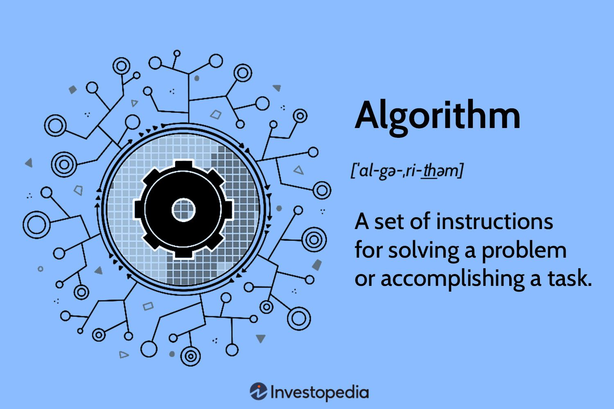

Algorithms

Algorithms are used to find the best possible way to solve a problem,
based on data storage, sorting and processing, and machine learning.
There are four types of machine learning algorithms:
1.Supervised
2.Semi-supervised
3.Unsupervised
4.Reinforcement.
Examples